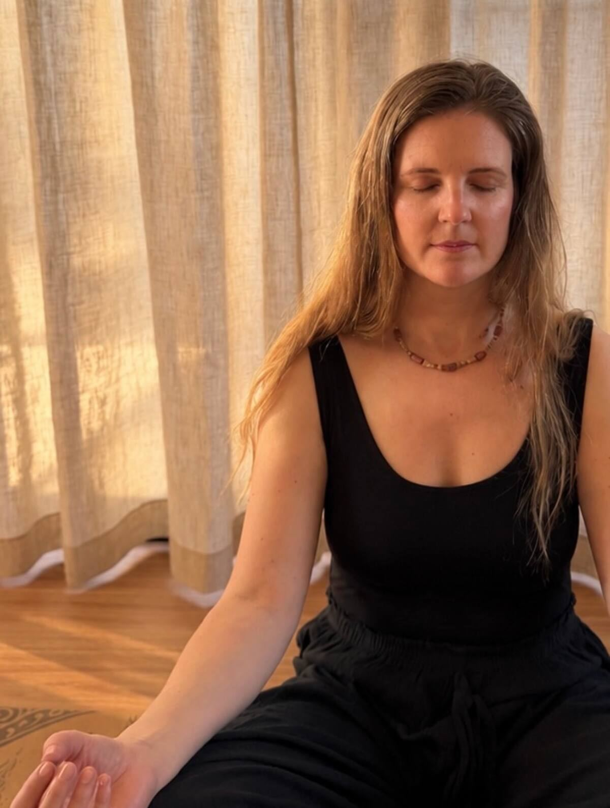
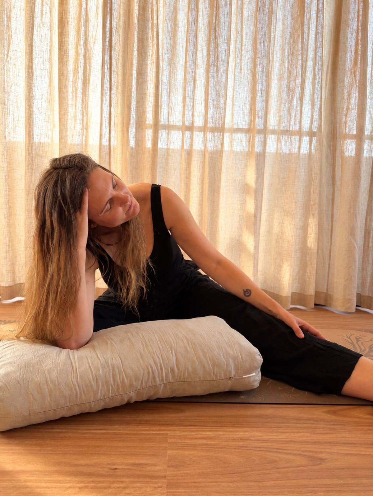
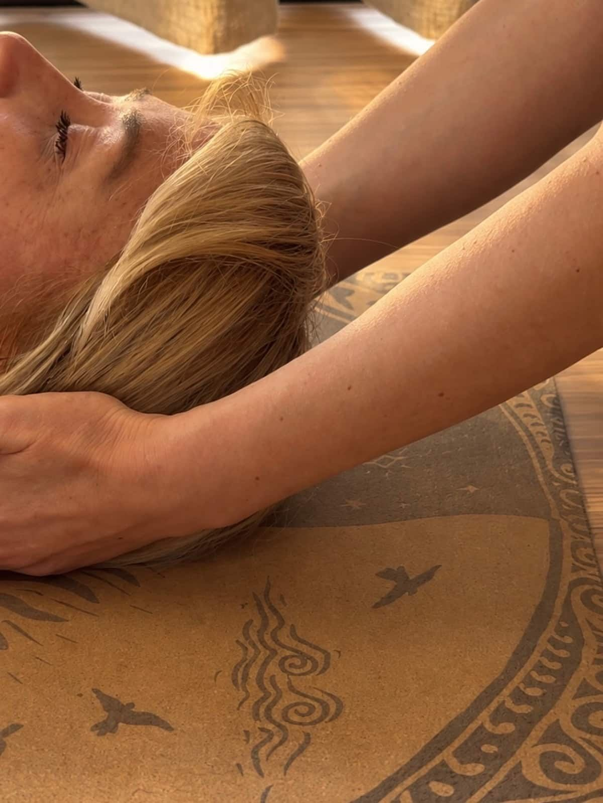

Every stay comes with a private session with Theresa
Theresa is a qualified yoga and meditation teacher and lives on site. Each guest gets a one-on-one session of yin yoga or guided meditation, set to your experience and what you need from your time here.
That might be gentle movement, breathwork, or learning to sit still. The session happens in the living space of the tiny home. Staying longer? Extra sessions can be arranged at a cost.


